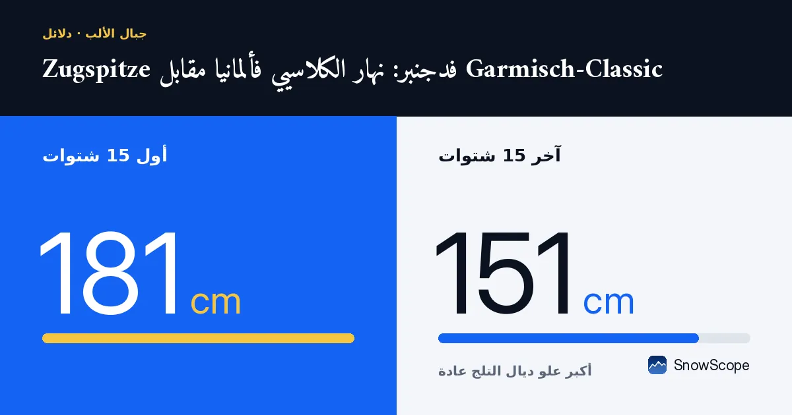
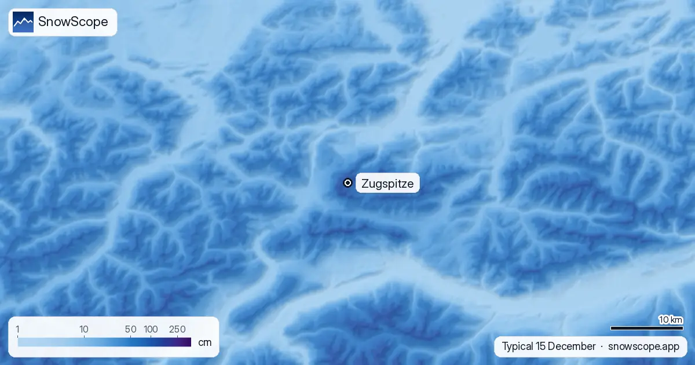

Zugspitze فدجنبر: نهار الكلاسيي فألمانيا مقابل Garmisch-Classic
فـ وسط دجنبر، الهضبة الجليدية ديال Zugspitze كاتقعد تحت التلج الغميق، بينما منطقة Garmisch-Classic التحتية فيها غطا رقيق. الاتنين كيكلفو حوالي 70 يورو ليوم واحد الحق ديال البيست اونلاين، لكن العلو ديال التلج فـ كل ارتفاع كيحكي قصة مختلفة على فين غادي تصرف فلوسك.
شوف توقعات التلج مباشرة ديال Zugspitze فالتطبيق ديال SnowScopeالعلو ديال التلج، التنبيهات والخريطة 3D، فابور.
جوج جبال مختلفين اوي فـ نفس المدينة
Garmisch-Partenkirchen كاتقعد فـ جرة أعلى جبل فـ ألمانيا. منطقة الثلج ديال Zugspitze كاتمتد من محطة الوادي فـ 995 م لـ 2627 م، فيها 16 كم ديال البيستات مخطط ليهم و 38 تليفريك. Garmisch-Classic كاتتمدد على 38 كم ديال البيستات من 727 م لـ 2047 م فيها 18 تليفريك، كولهم فـ نفس المدينة.
فـ دجنبر، الاختيار بينهم واضح لكن غالي. كتقدر تصرف فلوس باش تاخد التلج الغميق المضمون على هضبة جليدية صغيرة، ولا أرض اكثر لكن الغطا ديال التلج مشروش فـ تحتانا.


فين غادي نلقا التلج المضمون فـ دجنبر
راس Zugspitze فـ 2627 م فاق 30 سم ولا زيادة فـ كل شتوة وحدة خلال الأسبوع ديال 15-21 دجنبر على طول 46 شتوة ديال المعطيات. فـ أسبوع العيد، 96 بالمية ديال الشتوات فيها 60 سم ولا زيادة. حتى السنة الرقيقة - هادي الكاتجي مرة واحدة فـ كل عشرة شتوات - فيها 62 سم فـ 15 دجنبر. الشتوة اللي فاتت تركات 80 سم.
راس Garmisch-Classic (2047 م) فاق 30 سم فـ نفس الأسبوع فـ 89 بالمية ديال الشتوات، لكن الوسط ديالها (1387 م) فـ 48 بالمية فقط ديال الشتوات. القاع فـ 727 م كايشوفو 6 سم عادي فـ 15 دجنبر. باش تخزج للبيست فـ دجنبر، غير راس Zugspitze والتليفريكات التحتانية ديال Garmisch-Classic هي المضمونة.
العلو ديال التلج حسب التاريخ فـ دجنبر
على راس الثلج ديال Zugspitze، توقع 81 سم فـ 1 دجنبر، 122 سم بـ 15 دجنبر، و 144 سم فـ ليل الميلاد. فـ وسط الجبل (1811 م)، الأرقام ديالها 35، 52 و 67 سم. محطة الوادي التحتانية كادير فـ المتوسط 7، 12 و 14 سم فـ نفس الفترات - ما فيش ديك حتى باش تخزج للبيست.
راس Garmisch-Classic كاتبني من 46 سم (1 دجنبر) لـ 57 سم (15 دجنبر) لـ 71 سم (24 دجنبر)، بينما وسطها كايمشي من 24 سم لـ 28 سم لـ 36 سم. الاتنين كايشوفو التلج أثقل من أواخر دجنبر لـ جوج، لكن أول دجنبر على Garmisch-Classic رقيق ما فيه غير فـ الراس.
شنو معنى هادي الأرقام ليوم واحد فـ دجنبر
إذا فـ جو صافي، الثلج ديال Zugspitze الجليدي كايجيب لك شروط مضمونة: هضبة واسعة وناعمة فين الغطا عميق وحقيق من أول دجنبر. البيستات مشي طويلين، لكن التلج مضمون. إذا توقف توقف ضخم الهضبة، ما عندك الخطة الثانية على هاد الجبل.
Garmisch-Classic كايجيب لك أنواع كتر وبيستات كتر، لكن الكايخزجو للبيست فـ دجنبر لازم يقعدو على التليفريكات العلية. الغطا فـ وسط الجبل مشروش؛ القاع ما كاينش. الفاتورة ديالها هي أرض مقابل التلج الرقيق.
سعر التذاكر والتذكرة ديال الموسم
تذكرة اليوم ديال الشخص الكبير على Zugspitze كاتكلف 70.50 يورو اونلاين لـ 2026-27، وفيها رحلة التليفريك ولا السكة. Garmisch-Classic هي 69 يورو اونلاين. الصفحات الرسمية كتقول بلي السعر فـ شباك التذاكر أعلى من الاسعار اونلاين. الاتنين مشي كايحطو تذكرة 6 ايام على الصفحة ديالهم الرئيسية.
الفائدة ديال دجنبر فـ تذكرة اليوم الشرات اونلاين، مشي تذكرة الأسبوع. اختار منطقتك حسب التوقعات، اشري اونلاين، وخلي الاتنين فـ بالك كخطط احتياطية إذا كان واحد منهم قفل ولا الجو تبدل.
دجنبر هاد السنة قديش فيه شبه مع الماضي
التلج فـ راس Zugspitze فـ دجنبر كاين ثابت: العلو العادي فـ 15 دجنبر كان 112 سم فـ أول 15 شتوة ديال المعطيات (1980-95) و 115 سم فـ أخر 15 (2011-26). الشتوة اللي فاتت تركات 80 سم، تحت الوسط ديال الحين لكن مضمون للخزجة.
وسط الجبل ديال Garmisch-Classic كايحكي قصة أقل تفاؤلا. العلو ديال التلج فـ دجنبر هناك كانت تهبط من 54 سم العادي فـ الشتوات اللي خزنت لـ 47 سم فـ الحديثة. هاد الاتجاه ديال الشتوات خفيف، مشي هايل، لكن كايهم ليمحطة الكاتعتماد على حجوزات دجنبر.
نصايح للي كيتزلجو
- اشري تذكرتك ديال اليوم اونلاين قبل ما تجي: أرخص من سعر الشباك فـ المحطة.
- على Zugspitze، اركب البيستات ديال الثلج الجليدي وترجع لتحت ب التليفريك ولا السكة؛ التلج فـ قاع الوادي فـ دجنبر رقيق اوي باش تخزج.
- على Garmisch-Classic فـ وسط دجنبر، استعمل غير التليفريكات التحتانية التاع أعلى إذا ما جاش التلج الجديد؛ الارتفاع الوسط فيه 30 سم تلج فـ أقل من نصف الشتوات اللي فاتو.
- شد النشرة ديال الانهيارات ديال بافاريا (Lawinenwarndienst Bayern) قبل ما تخزج خارج الطرق على الثلج الجليدي ديال Zugspitze.
- إذا توقع تقفل الهضبة ديال Zugspitze (عاصفة ولا برد قاسي)، التليفريكات العلية ديال Garmisch-Classic غادي تبقى الخيار ديالك فـ دجنبر؛ شد التوقعات ليلة قبل.
على هاد الأرقام
العلو ديال التلج فالمحطات هو أكثر تلج فالجهة الفوقانية فالتاريخ المكتوب؛ هادو تقديرات لمنطقة، ماشي قياس فنقطة وحدة. التوقعات يمكن تتبدل. ديما شوف النشرة الرسمية ديال الانهيارات قبل ما تخرج من البيست.
النشرات الرسمية ديال الانهيارات: Lawinenwarndienst Bayern
كيفاش تستاشهد بهاد المقال
للبحث، التعليم ولا الصحافة: الأرقام والرسومات تقدر تعاود تخدم بيهم بحرية تحت CC BY 4.0 مع هاد الاستشهاد.
SnowScope (2026), Zugspitze فدجنبر: نهار الكلاسيي فألمانيا مقابل Garmisch-Classic, https://snowscope.app/blog/ar/2026/11/zugspitze-december-skiing-germany-glacier-price.html, تشاف ف 2026-11-14
SnowScope (Atlas Labs). (2026, November 14). Zugspitze فدجنبر: نهار الكلاسيي فألمانيا مقابل Garmisch-Classic. SnowScope snow reports. https://snowscope.app/blog/ar/2026/11/zugspitze-december-skiing-germany-glacier-price.html
BibTeX
@misc{snowscope2026zugspitzedecemberskiingg,
author = {{SnowScope (Atlas Labs)}},
title = {Zugspitze فدجنبر: نهار الكلاسيي فألمانيا مقابل Garmisch-Classic},
year = {2026},
month = nov,
howpublished = {\url{https://snowscope.app/blog/ar/2026/11/zugspitze-december-skiing-germany-glacier-price.html}},
note = {Published 2026-11-14 13:29 UTC; accessed 2026-11-14}
}· CC BY 4.0 · الطريقة، الداتا والأدوات →
Zugspitze: التلج والحرارة حسب العلو، هاد الشتا مقارنة مع اللي فاتت (الأدوات) →
تابع Zugspitze
فابور: ميساج ملي يجي التلج، والتوقعات كل صباح.